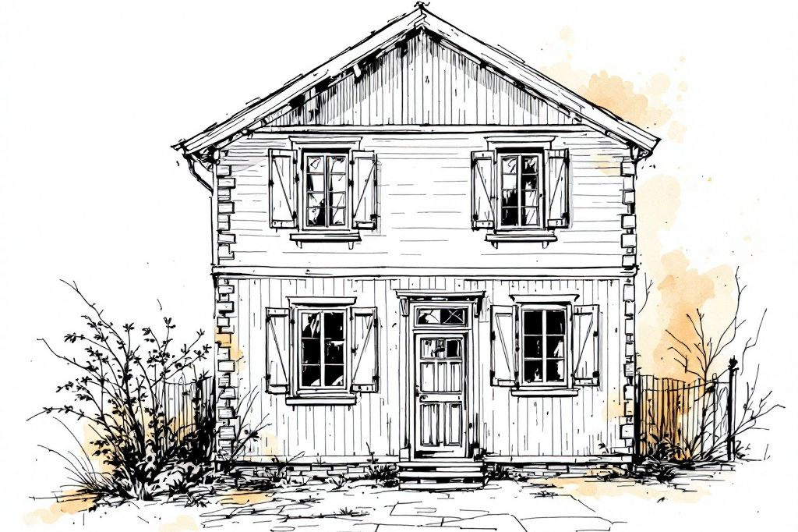
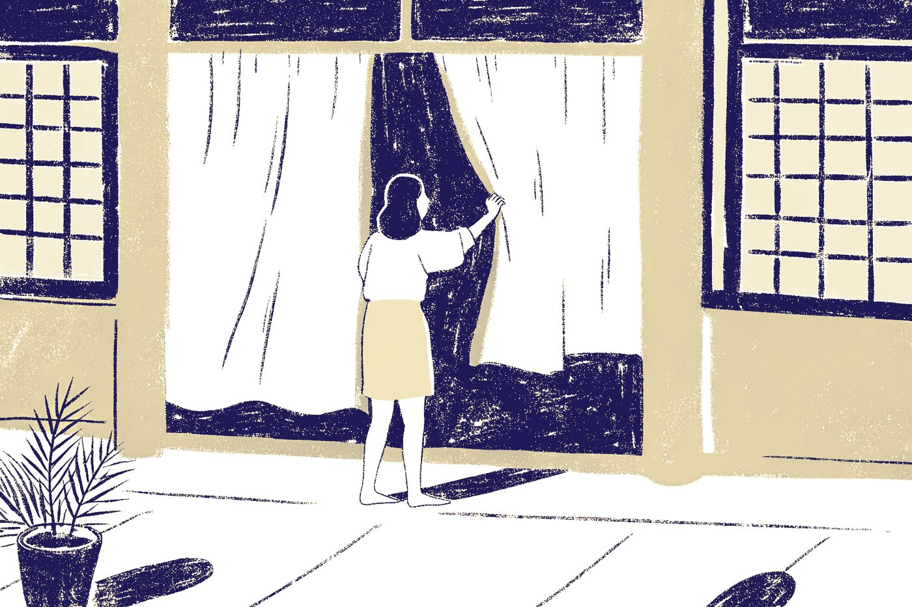

お仕事 ／ 家を生かす
空き家の見回りと、家守
住まなくなった家の様子を見に伺います。
風通し・状態の確認・写真での報告。
住んでいる家の月々の見守り「家守（いえもり）」も、同じ「見守り」のお仕事として、ここでご案内します。

料金が決まりしだい、載せます。月額の料金も、決まりしだいお知らせします。出張費・最低料金は、お見積もりのときに、先にお伝えします。
このお仕事は、準備中です。まだ始めていません。
空き家の見回り
人の気配がないほど、傷みやすい家です。
別荘や、住む人のいない実家は、人の気配がないほど、傷みが進みやすい家です。窓を開けて風を通し、郵便物や庭の様子を確かめ、写真でお知らせする。そんな見回りを考えています。
窓を開けて、空気を入れ替えます。
屋根まわり、雨どい、戸締まりなどを、見える範囲で。
たまった郵便物や、草の伸び具合を確かめます。
遠くのご家族にも、様子が分かるように。

見回りの流れ
はじめは、お話を伺うところから。
お話を伺い、家の場所と様子を確かめます
いつから住んでいないか、気になっていることを伺います。
見回りのしかたと、ご報告の仕方を決めます
見るところ、伺う回数、ご報告の方法を、ご相談のうえで決めます。鍵のお預かりなど大切なことは、決まりしだい先にお伝えします。
伺って、風を通し、写真でご報告します
見回りのあとに、やったことと家の様子をお知らせします。
住まなくなった家を、これからどうするかは、空き家のこれからの相談で、選べる道を並べて考えます。
月々の見守り「家守（いえもり）」
住んでいる家にも、月に一度、同じ顔が顔を出します。
住み慣れた家で、お年寄りが暮らし続けられるように。月に一度、同じ人が伺う、月額の見守りを考えています。月額の料金は、決まりしだいお知らせします。
窓を開けて空気を入れ替え、外まわりと建物の様子を、見える範囲で確かめます。
草の伸び具合を見ます。簡単な草取りは、範囲を決めたうえで。大きな草刈りや伐採は、別にお見積もりします。
ポストにたまった郵便物やチラシを整理して、空き家と分かりにくくします。
電球の交換や、ちょっとした用事を、その場で。「これ見てくれる？」にも応えます。
見てきた様子を、写真つきでお知らせします。離れて暮らすご家族にも、ご本人の了承のうえで。
気づいたことは、お伝えします。頼む先に迷ったときも、いっしょに考えます。
正直に
見守りで、できること・お約束できないこと。
- 見える範囲での、家と庭の目視の確認
- 写真つきのお知らせ
- 郵便物の整理、風通し、小さな用事
- 気づいたことを、お伝えすること
- 建物の診断や、専門的な点検はできません。傷みが気になるときは、その旨をお伝えし、専門の方への相談をおすすめします。
- 防犯・防災の保証はできません。侵入や災害を防ぐお約束ではなく、「見に行く」お仕事です。
- 緊急時の駆けつけや、立ち会いを、お約束することはしていません。できる範囲は、決まりしだいお伝えします。
- 鍵のお預かりや、室内に入っての確認の扱いは、決まりしだい先にお伝えします。いまは、お約束していません。
- 大きな草刈り、伐採、修繕は、お引き受けする前にご相談し、別にお見積もりします。
ひとつ、お願い
屋根に上がらせる前に、まず相談を。
「近くで工事をしていて、お宅の屋根が浮いているのが見えた」。そう言って来た人を、屋根に上げないでください。本当に直す必要があるかを、代わりに見に伺います。
3つの約束
見守りで、大切にしたいこと。
同じ人が、伺います。
伺う人の名前は、訪問の前にお知らせします。顔なじみになれる見守りにします。
売り込みません。
見るだけで帰る日があります。「直さなくて大丈夫」とお伝えするのも、仕事です。
金額は、作業の前に。
作業を始める前に金額をお伝えし、ご納得いただいてから進めます。
よくあるご質問
ご不安なことを、先におこたえします。
月々の料金は、いくらですか。
まだ決めていません。月額の料金は、決まりしだいお知らせします。ご相談のうえ、決めます。
誰が伺うのですか。
伺う人の名前と、訪問の日時・目的は、訪問の前にお知らせします。
鍵を預けて、室内も見てもらえますか。
まだ決めていません。鍵のお預かりなど、大切なことは、決まりしだい、先にお伝えします。いまは、お約束していません。
傷みや、困ったことが見つかったら？
見つけた様子を、写真つきでお知らせします。専門の作業が必要なときは、その旨をお伝えし、進め方をご相談します。費用がかかるときは、先にお知らせします。
留守のあいだや、台風のあとも見てもらえますか。
考えています。できる範囲は、決まりしだいお伝えします。いまはまだ、準備中です。
契約の条件や、解約のしかたは？
決まりしだい、先にお伝えします。ご納得いただいてから、お決めいただきます。
ご本人が「いらない」と言っています。
ご本人の気持ちが、いちばん大切です。ご家族だけで決めず、ご本人に会ってお話しすることから始めます。
どの地域に来てもらえますか。
逗子・葉山・鎌倉です。ご相談される方は、遠方にお住まいでもかまいません。
空き家も、住んでいる家も、気がかりなら。
お電話でも、Webの相談フォームでも、ご相談いただけます。
お電話 090-6513-2925 Webで相談する